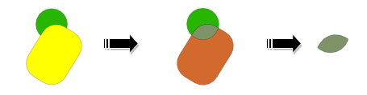
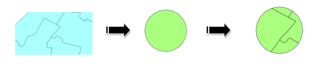
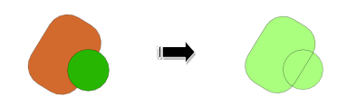
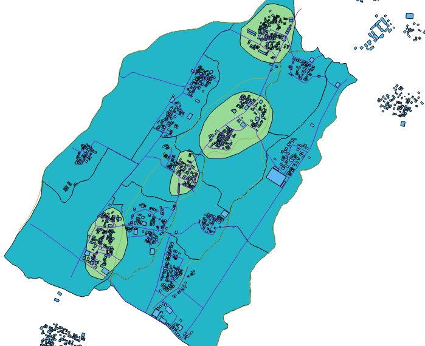
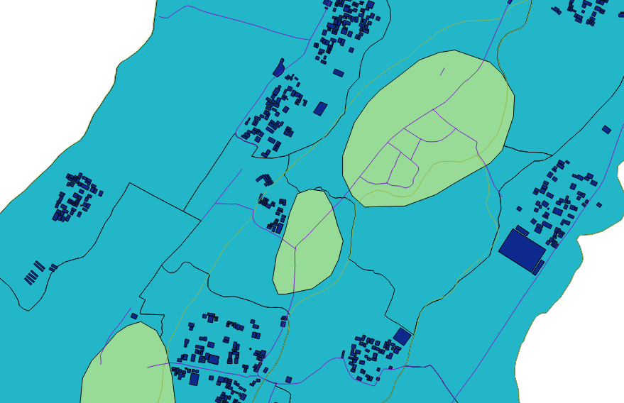
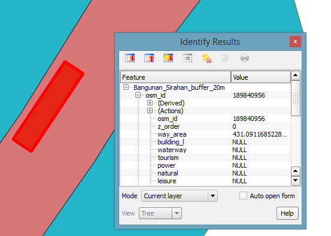

Module 3: Determining IDP Camp Location¶
Learning Objectives
Develop criteria for determining an ideal IDP camp location
Use geoprocessing tools
Use various spatial queries: contains, within, equal, intersect and is disjoint
Combine geoprocessing tools and spatial queries to select building(s) for temporary IDP camps
Another important part of disaster planning is determining potential locations for IDP camps. To do this we need to be able to take various criteria into account in finding an appropriate location. In Unit 2 we did exactly this. We analysed various layers and performed a GIS analysis to determine several land areas appropriate for IDP camps near Merapi.
In this module we will take a closer look at the tools we use to perform this GIS analysis, but the process will remain the same. As with any proper GIS enquiry, we will follow these steps:
Define the problem
Obtain data
Analyse the problem
Visualise the result
1. Geoprocessing tools¶
When we performed our first analysis, we utilised several spatial functions in order to answer questions such as “what locations match conditions in layer A and different conditions in layer B?”. Before we begin our GIS analysis, let’s examine some of the spatial functions that are available to us.
Buffer¶
The buffer function is used to make a new feature based on a given distance. We saw this in Unit 2, when we defined a buffer around roads and health facilities. For example, we created a 3km buffer around health facilities and created a new layer from this – these defined areas which met one of our criteria – that camp locations should be close by.
Intersect¶
The intersect function is used to combine two overlapping layers, with the result that only the intersecting features from both layers will be contained in the output layer. Attributes from both layer features will be combined in the new layer.
Clip¶
Clip is used to cut an input feature with another feature (clip feature). The attributes from the input feature are left intact, only the shape of the input feature will follow the shape of the clipping feature.
Union¶
Union is used to make a new feature by combining two features. The feature produced contains features and attributes from the two source features.
Dissolve¶
Dissolve is used to combine features inside layers that have the same value in one of their fields.
2. Spatial queries¶
Spatial Query is used to find the relationship between two features. The resulting value is either TRUE or FALSE, unlike the geoprocessing functions above, which result in new geometric features. Thus performing a Spatial Query is more like asking a yes or no question. Various Spatial Query functions are covered here:
Within¶
Within is used to ask the question: ‘is feature A fully located inside feature B?’ In the image below, let’s assume the dark-coloured circle is feature A and the light-coloured circle is feature B. We can use the Within function to ask the question, “Is feature A fully within feature B?” The result would be TRUE. On the other hand, if we asked “Is feature B fully within feature A?” the answer would of course be FALSE.
Contains¶
Contains is the opposite of Within. This function allows us to ask “Does feature A contain feature B?”
Equal¶
Equal results in TRUE if two features have the same position and size. In the above example, the result would be FALSE, because feature A and feature B do not have the same size or the same position.
Intersect¶
Like the geoprocessing intersect tool we mentioned in the previous section, this spatial query function evaluates whether two features are intersecting. If the features intersect, this query will return TRUE.
Is Disjoint¶
This function is the opposite of Intersect, meaning that it will return TRUE if two features are not touching one another. We might use this query if we want to search for buildings that are located outside of an impacted disaster area. Because this function is the opposite of Intersect, it would return FALSE if run on the example above.
Implementation of these functions is important in supporting analysis for scenario development, specifically to obtain answers to questions such as:
Which schools are safe from an earthquake?
Which buildings can be used as temporary IDP camps?
How many kilometres of national road will be lost in case of tsunami?
3. IDP camp criteria and data¶
Now let’s get back to our Sirahan project. Throughout the rest of this module, we will apply our knowledge of geoprocessing tools and spatial queries in order to identify an appropriate IDP camp location during a flood that is similar to the one in our model. First, let’s list some criteria that we can use to determine the best location. Try to think of your own list, and then see how it compares to ours below:
Buildings/Houses that will be used as an evacuation site should be situated outside the affected area (outside the flood zone)
Location should have direct access to a primary road (jalan kabupaten) or secondary road (jalan desa) with a maximum distance of 20 metres
Building should have an area of at least 225 square metres
We’ve defined our problem, so the next step in the GIS process is to prepare our data. We should have all the data ready from the previous module, but let’s make a quick list of what data we must have in order to work with our criteria.
Buildings/houses
Impacted area of flood
Road network with road class attribute
Luckily, we have this data already prepared. The data you use might be different if you have different criteria, or you have different needs and problems.
Create a new project or edit your existing project so that it contains the following layers: (the new layers are located in
qgis/Sirahan/)
Your map will look similar to this:
Save the project as
analisis_vektor.qgsand create a new folder with the nameanalisis_vektor. As we run various geoprocessing tasks and output new layers, we will save the new files in this directory.
4. Criteria #1: building must be outside affected area¶
Okay, let’s work on our first criteria, that the building we choose as an IDP refuge should be outside the affected area. Can you guess which type of spatial query we will perform? Refer to the list of operations covered previously in this module and guess which one fits. If you guessed Is Disjoint, you are right! Is Disjoint let’s us search for features in one layer that DO NOT touch features in another layer.
Go to .
Choose Bangunan_Sirahan as the input layer under Select source features from.
Use the Is Disjoint operator and choose area_terdampak_Sirahan as the reference feature.
Click Apply.
A window will appear which looks like the image below. Click Close.
The buildings outside of the affected flood areas will become selected:
Save the selection as a new layer named
Bangunan_Sirahan_terpilih.shpand add it to the map.Remove the old buildings layer.
5. Criteria #2: location must have direct access to a primary/secondary road within 20 metres¶
Now, we need to consider our second criteria, that the building chosen as an IDP refuge is close to a main road. We used the same consideration with our example in Unit 2. Do you remember how we can do this? First, we must use the Query Builder so that we are only using the primary and secondary roads. Then we will use one of the Geoprocessing tools – Buffer!
Right-click on the Jalan_Sirahan layer and click Query.
Create a query like this:
"tipe_jln" = 'Jalan Desa' OR "tipe_jln" = 'Jalan Kabupaten'
Click Test. This will run the query and tell you how many features meet the conditions in your query.
You should see that our map shows fewer roads now, because we have filtered out those that are not primary or secondary. Now that we have the roads, we will create a buffer around them.
Select the Jalan_Sirahan layer and go to :
Set it up like this:
Save the layer as
Jalan_Sirahan_buffer_20m.shp. Click OK and QGIS will create the buffer, which will look like this:
Now we have a layer which shows the areas that are within 20 metres of the primary and secondary roads. The last thing to do in order to apply our criteria is determine which buildings are situated within the buffer. Hence we need to do another spatial query, this time of type Within.
Go to .
Fill in the fields to look like this:
Click Apply.
The buildings that are within the roads buffer will be selected. Right-click on the Bangunan_Sirahan_Terpilih layer and click Save Selection As…. Save the selection with the name
Bangunan_Sirahan_buffer_20m.
6. Criteria #3: building must have an area of at least 225 square metres¶
Our final criteria is that the building we choose should have an area of at least 225 square metres. With an area this size, the building will be able to serve as an IDP camp for the residents of Sirahan whose homes are affected by the flood.
Right-click on the Bangunan_Sirahan_buffer_20m layer and click Query. Enter the following query for the layer:
"way_area" >= 225
Click Test. The query should return only a handful of features.
Take a closer look at the remaining buildings. You can inspect the features of each individually by using the Identify Features tool.
In the very south tip of Sirahan you should find a building that is identified as a hospital. This building is, in fact, a real world hospital, and it is an actual IDP camp. Compare it with your result. This should be one of the buildings that your analysis deems suitable as a camp, and when you consider that it is also a hospital, it clearly makes a good location.
Summary¶
In this module we reviewed the various Geoprocessing tools and spatial queries, and we used some of them to analyse our problem – where to put an IDP camp.
This is yet another key component of contingency planning, and luckily it’s not difficult to perform with GIS.